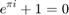

Contents
Preámbulo
clear clc close all force global STATE TH LEFT RIGHT aux0 aux1 aux2 aux3 aux4 I INVERTED step = 0.05; coeffMaxAmount = 50; minCoeff = 1;
Menú de inicio
fig_inicio = uifigure('Position', ([810 390 320 90])); % TEXT lbl = uilabel(fig_inicio, 'Position', [20 50 300 30], ... 'Text', '¡Bienvenido! Escoge el método que desees aplicar.'); lbl.WordWrap = 'on'; % BUTTONS btn_details = uibutton(fig_inicio, 'Text', 'Detalles', ... 'Position', [20, 15, 75, 22], ... 'ButtonPushedFcn', @(btn, event) btn_details_irq(fig_inicio)); btn_contour = uibutton(fig_inicio, 'Text', 'Contorno', ... 'Position', [110, 15, 75, 22], ... 'ButtonPushedFcn', @(btn, event) btn_contour_irq(fig_inicio)); btn_exit = uibutton(fig_inicio, 'Text', 'Salir', ... 'Position', [220, 15, 75, 22], ... 'ButtonPushedFcn', @(btn, event) btn_exit_irq(fig_inicio)); % Waiting... waitfor(fig_inicio)
Escoger acción principal
switch STATE case 'DETAILS' case 'CONTOUR'
INVERTED = false;
TH = 127;
STATE = 0;

File = ['Images/' uigetfile('Images/*.jpg')]; File(end-4:end); I = rgb2gray(imread(File)); LEFT = I; width = length(I(1, :)); height = length(I(:, 1)); RIGHT = I > TH; RIGHT = imfill(RIGHT, 'holes'); aux0 = RIGHT; aux1 = zeros(height, width); aux2 = zeros(height, width); aux3 = zeros(height, width); aux4 = zeros(height, width); fig_contour = figure('Position', ([200 200 1400 500])); showImages(fig_contour);
UI
h = uifigure('Position', ([700 700 550 250])); % SLIDERS % TH sld = uislider(h, 'Position', [15, 45, 200, 3], ... 'ValueChangingFcn', @(sld, event) sld_irq(event, fig_contour)); sld.Limits = [0 255]; sld.Value = 127; % White Bars sld_1 = uislider(h, 'Position', [200, 200, 300, 3], ... 'ValueChangingFcn', @(sld, event) sld_1_irq(event, height, fig_contour)); sld_2 = uislider(h, 'Position', [200, 170, 300, 3], ... 'ValueChangingFcn', @(sld, event) sld_2_irq(event, height, fig_contour)); sld_3 = uislider(h, 'Position', [200, 140, 300, 3], ... 'ValueChangingFcn', @(sld, event) sld_3_irq(event, width, fig_contour)); sld_4 = uislider(h, 'Position', [200, 110, 300, 3], ... 'ValueChangingFcn', @(sld, event) sld_4_irq(event, width, fig_contour)); sld_1.Value = 0; sld_1.Limits = [0 100]; sld_2.Value = 0; sld_2.Limits = [0 100]; sld_3.Value = 0; sld_3.Limits = [0 100]; sld_4.Value = 0; sld_4.Limits = [0 100]; % TEXT lbl = uilabel(h, 'Position', [245 25 180 30], ... 'Text', 'La imagen rellena no debe tener huecos de color negro'); lbl.WordWrap = 'on'; % BUTTONS btn_start = uibutton(h, 'Text', 'Empezar', ... 'Position', [435, 30, 100, 22], ... 'ButtonPushedFcn', @(btn, event) btn_start_irq(fig_contour)); btn_inverted = uibutton(h, 'Text', 'Invertir', ... 'Position', [30, 150, 100, 22], ... 'ButtonPushedFcn', @(btn, event) btn_inverted_irq(fig_contour)); % Waiting... waitfor(fig_contour) close(h) % Second Switch Statement switch STATE case 'CONTOUR_START'
C = cell2mat(bwboundaries(RIGHT));
eachCircle = C(:, 2);
y = C(:, 1);
M = (width / 2 - eachCircle) + 1i * (height / 2 - y);
r = 1:length(abs(M));
figure
plot(r, real(M), '.', 'Color', 'black')
hold on
plot(r, imag(M), '.', 'Color', 'red')
hold off
title('Parte real e imaginaria')
axis equal
H = fftshift(fft(M));
L = length(H);
H = H / L;
figure
plot(abs(H))
title('FFT shifted')
if mod(L, 2) == 1
K = (1:L)' - L / 2 - 1/2;
else
K = (1:L)' - L / 2 - 1;
end
sheet = [K, abs(H), angle(H)];
sheet = sortCoeff(sheet);
File = File(1:end - 4);
writematrix(sheet, strcat(File, '.xls'))
Representación y generación del vídeo
p = figure;
set(gcf, 'Position', [0 0 1080 1920])
hold on; grid on; box on; axis equal
set(gca, 'xlim', [-width * 0.6 width * 0.6], 'ylim', [-height * 0.6 height * 0.6])
% Create and open video writer object
v = VideoWriter('tercera_prueba.mp4', 'MPEG-4');
v.Quality = 100;
v.FrameRate = 120;
open(v);
t = 0;
aux = 0;
% Allocating memory for saved data
eje = 0:step:1;
L = length(0:step:2 * pi);
eachCircle = 0:step:1;
circle = zeros(L, L);
circleBox = zeros(length(eachCircle), L, coeffMaxAmount);
centre = zeros(L, 1);
centreBox = zeros(L, coeffMaxAmount + 1); % Para incluir el origen
contourLine = zeros(L, 1);
for coeff = minCoeff:coeffMaxAmount % Una vez por coeficiente
t = t + 1;
for whole = 0:step:1 % Una vuelta completa
cla
whole_aux = round(whole / step + 1);
texto = 'Número de coeficientes: ' + string(t);
text(0, height / 2, texto);
% Centros (y radios)
if coeff ~= 1
centre(whole_aux) = sheet(coeff - 1, 2) * exp(1i * (sheet(coeff - 1, 1) * 2 * pi * whole + sheet(coeff - 1, 3)));
centreBox(:, coeff) = centre + centreBox(:, coeff - 1);
else
centre(whole_aux) = 0;
end
% Circunferencias
for eachCoeff = 1:coeff
if (eachCoeff == coeff) && (eachCoeff ~= 1)
circle = centreBox(whole_aux, eachCoeff - 1) + sheet(eachCoeff - 1, 2) * exp(1i * 2 * pi * eachCircle);
circleBox(:, whole_aux, eachCoeff) = circle;
end
plot(real(circleBox(round(eachCircle / step + 1), whole_aux, eachCoeff)), imag(circleBox(round(eachCircle / step + 1), whole_aux, eachCoeff)), 'Color', '#0c821a')
end
contourLine(whole_aux) = centreBox(whole_aux, coeff);
plot(real(contourLine(1:whole_aux)), imag(contourLine(1:whole_aux)), '.', 'Color', 'red') % Centro de la última circunferencia
plot(real(centreBox(whole_aux, 1:coeff - 1)), imag(centreBox(whole_aux, 1:coeff - 1)), '.', 'Color', 'blue') % Resto de centros
plot(real(centreBox(whole_aux, 1:coeff)), imag(centreBox(whole_aux, 1:coeff)), 'Color', 'black') % Radios
% Capturar gráfico y escribir en archivo
frame = getframe(gcf);
writeVideo(v, frame);
end
end
close(v);
end
end
SWITCH expression must be a scalar or a character vector. Error in Dibujos_con_FFT (line 36) switch STATE
IRQs
% Sliders function sld_irq (sld, fig) global TH LEFT aux0 INVERTED TH = sld.Value; if INVERTED aux0 = LEFT < TH; else aux0 = LEFT > TH; end aux0 = imfill(aux0, 'holes'); showImages(fig); end function sld_1_irq(sld, height, fig) global aux1 resetImages(); aux1(:) = 0; if (sld.Value ~= height) aux1(round(height * (1 - sld.Value / 100)) + 1:height, :) = 1; end showImages(fig); end function sld_2_irq(sld, height, fig) global aux2 resetImages(); aux2(:) = 0; if (sld.Value ~= height) aux2(1:round(height * sld.Value / 100), :) = 1; end showImages(fig); end function sld_3_irq(sld, width, fig) global aux3 resetImages(); aux3(:) = 0; if (sld.Value ~= width) aux3(:, 1:round(width * sld.Value / 100)) = 1; end showImages(fig); end function sld_4_irq(sld, width, fig) global aux4 resetImages(); aux4(:) = 0; if (sld.Value ~= width) aux4(:, round(width * (1 - sld.Value / 100)) + 1:width) = 1; end showImages(fig); end % Buttons function btn_details_irq(fig) global STATE STATE = 'DETAILS'; close(fig); end function btn_contour_irq(fig) global STATE STATE = 'CONTOUR'; close(fig); end function btn_exit_irq(fig) close(fig); end function btn_start_irq(fig_contour) global STATE STATE = 'CONTOUR_START'; close(fig_contour) end function btn_inverted_irq(fig) global INVERTED aux0 INVERTED = ~INVERTED; aux0 = ~aux0; showImages(fig); end
Other functions
function showImages(fig) global LEFT RIGHT aux0 aux1 aux2 aux3 aux4 RIGHT = aux0 | aux1 | aux2 | aux3 | aux4; RIGHT = imfill(RIGHT, 'holes'); clf(fig) subplot(121) imshow(LEFT) title('Imagen original') subplot(122) imshow(RIGHT) title('Imagen rellena') end function resetImages() global I LEFT RIGHT LEFT = I .* uint8((I | RIGHT)); end function LEFT = sortCoeff(sheet) LEFT = sheet; for n = 1:length(sheet(:, 1)) index = sheet(n, 1); if index > 0 index = 2 * index - 1; elseif index < 0 index = 2 * abs(index); end LEFT(index + 1, :) = sheet(n, :); end end